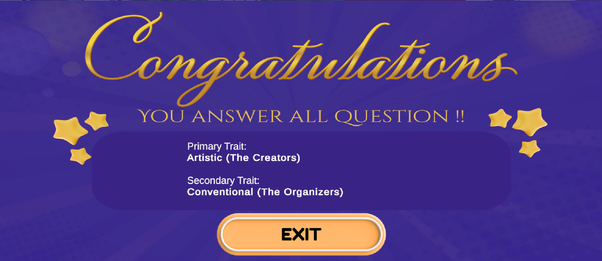
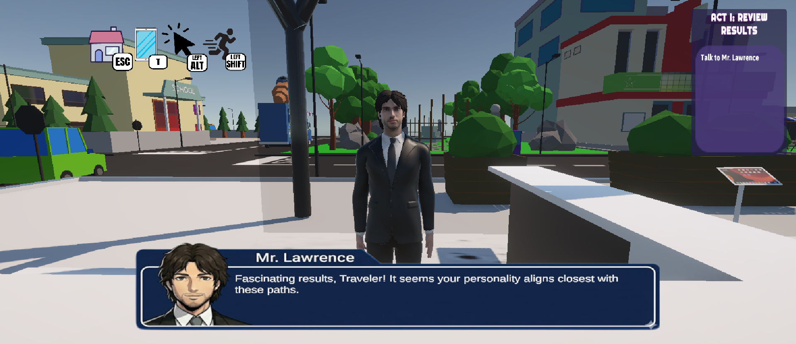
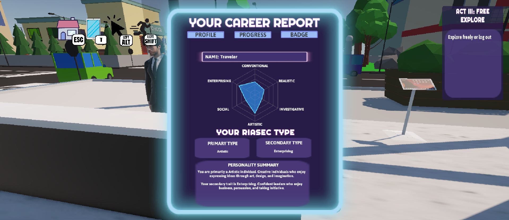
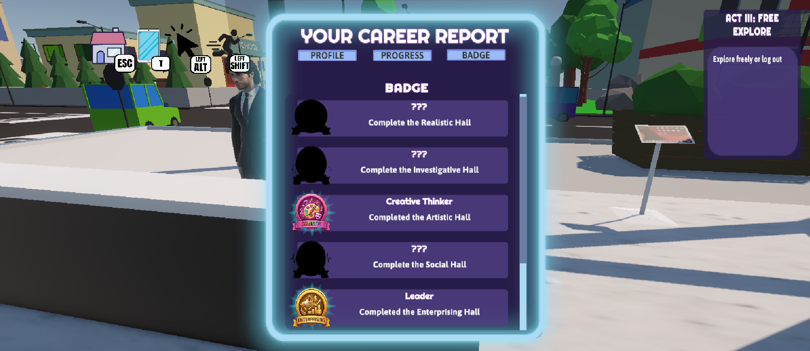
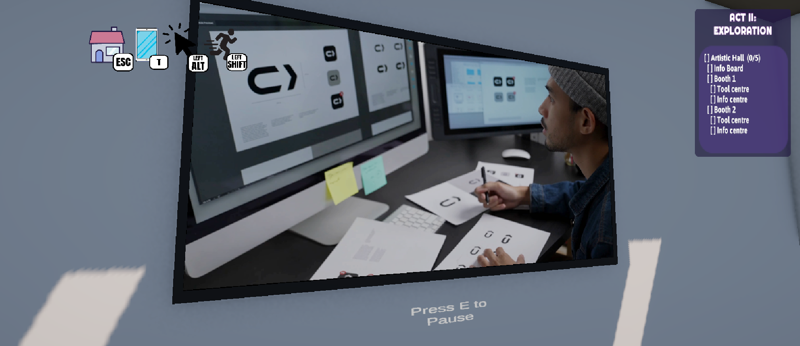

Key Features

RIASEC Personality Quiz
Players complete a personality assessment based on the Holland RIASEC model. The application analyses the responses and recommends two suitable career halls.

Career Halls
Six interactive career halls provide information about career descriptions, required skills, work environment, education pathway, and career-related activities.

NPC Guide
An NPC welcomes players, explains the gameplay, and provides guidance throughout the exploration journey.

Career Tablet
Displays the player's profile, progress, recommended halls, and earned badges.

Badge System
Players unlock badges after exploring career halls, encouraging engagement and exploration.

Interactive Learning
Learning is supported through videos, information boards, and self-reflection activities.